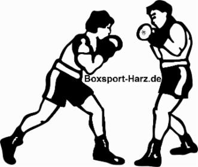

Nutze die Chance mit Mitschülern, Kollegen oder Freunden die Welt des Boxsports zu erfahren. Erleben Sie das Training und die professionelle Umgebung.
Wenn Sie einen der aufgeführten Box-Vereine in ihrer Nähe haben und die Trainingszeiten in Ihren Tagesablauf passen, kann ich Ihnen nur raten, nutzen Sie oder ihre Kinder das Angebot.
Und wenn Sie nur für wenige Monate dort trainieren um die Grundlagen zu lernen. Sie haben dort ideale Trainingsbedingungen und werden entsprechend Ihres Leistungsvermögens trainiert und noch viel wichtiger korrigiert.
Ein Trainer vor Ort kann Ihnen die Schläge viel besser erklären, als das in diesem Beitrag möglich wäre. Er kann es Ihnen zeigen und vormachen. Er sieht Ihre Fehler und kann sofort Einfluss darauf nehmen. Ein guter Trainer erkennt sofort Ihre Stärken und Schwächen und wird Sie entsprechend fördern und anleiten. Außerdem trainiert es sich im Kreise von Gleichgesinnten, gleich noch mal so gut.
Suchen Sie sich Ihren Box-Verein gut aus. Auch hier gibt es, wie überall im Leben, große Klassen-Unterschiede. Wenn Sie in einen Box-Verein kommen und Typen vom Format eines "Erkan" vor sich sehen der Sie mit „Du kommst hier nicht rein...“ oder Ähnlichem begrüßt, sollten Sie auf der Stelle die Schule verlassen. Im Ernst. Auch ein Laie kann unterscheiden ob in einem Verein Schläger oder Sportler trainieren. Lassen Sie sich aber auch nicht zu schnell erschrecken. Ein Box-Stall ist kein Ballett-Saal. Auch wenn beide Sportarten erstaunlich viel gemeinsam haben. Aber das werden Sie selbst schon nach wenigen Wochen des Trainings selbst feststellen.
In einem guten Box-Stall haben Sie ideale Trainingsmöglichkeiten. Sie haben alle Arten von Sandsäcke und Schlaggeräte, Geräte für das Krafttraining und Springseile zur Verfügung. Es gibt andere Sportler die Ihnen mit Rat und Tat zur Seite stehen und die Sie mit Berichten aus ihrer Anfangszeit motivieren und bei der Stange halten können.
Es gibt inzwischen immer mehr Trainingszentren die Fitness-Boxen in speziellen Kursen oder auch Frauen-Boxen anbieten. Fragen Sie einfach dort nach. Aber auch wenn diese Kurse nicht angeboten werden, sollte man das Training dort beginnen, wenn man die Möglichkeit hat.
Keine Angst! Es wird Sie niemand auffordern zu einem stiernackigen Typen in den Ring zu steigen und Ihren Mut zu beweisen. Wenn Sie klar sagen, dass Sie nur an dem Training selbst interessiert sind aber eigentlich keine Wettkämpfe bestreiten wollen, wird man Sie dort genau so gut trainieren, wie alle anderen Sportler und sich freuen, dass wieder jemand zur Gilde der Boxer hinzugekommen ist.
